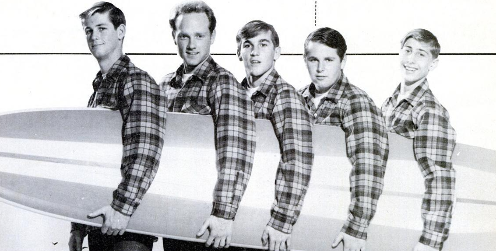

Surfin USA turned a borrowed Chuck Berry melody into The Beach Boys' first top five hit.
Released in March 1963, it set the sound and the subject matter for an entire genre.
It became the template for American surf rock.

Table of Contents
- Writing Surfin USA from a Chuck Berry Riff
- Recording and Releasing the Single
- Chart Success and Lasting Legacy
- FAQ
Writing Surfin USA from a Chuck Berry Riff
Brian Wilson wanted a follow-up that could match the local buzz around the band's first single, "Surfin'."
Bandmates David Marks and Carl Wilson had been playing him records by Chuck Berry.
That included the album "Chuck Berry Is on Top."
One track stood out, Berry's 1958 hit "Sweet Little Sixteen."
Wilson later described the moment plainly.
He wondered what would happen if he put surf lyrics over that same melody.
He kept Berry's chord changes and wrote a fresh set of lyrics.
They name real surf breaks across the country, plus one stop in Australia.
The Songwriting Credit Dispute
Capitol Records first published the song under Brian Wilson's name alone.
Chuck Berry's publisher, Arc Music, held the copyright to the underlying melody and pushed back.
Capitol responded by adding Berry as co-writer.
A share of the royalties went his way on later pressings.
A second credit dispute followed decades later.
Mike Love sued Brian Wilson in 1992 over songwriting credit on more than 30 Beach Boys songs.
He won credit for this one in 1994.
The underlying copyright belonged to Arc Music rather than to Wilson personally.
Recording and Releasing the Single
The Beach Boys cut the track on January 5, 1963 at Western Recorders in Hollywood.
Nick Venet produced the session.
Session player Frank DeVito played drums on the recording rather than Dennis Wilson.
Carl Wilson built the song's opening guitar line.
He drew on the twangy style of Duane Eddy's "Movin' n' Groovin'."
Capitol released the finished single on March 4, 1963, backed with "Shut Down."
It ran two minutes and twenty nine seconds.
The parent album followed on March 25, 1963 and eventually went gold.
Who Played on the Track
- Mike Love, lead vocal
- Brian Wilson, backing vocal, bass and organ
- Carl Wilson, backing vocal and lead guitar
- Dennis Wilson, backing vocal
- David Marks, backing vocal and rhythm guitar
- Frank DeVito, session drums
Chart Success and Lasting Legacy
The single climbed to number three on the Billboard Hot 100 during the summer of 1963.
Billboard later ranked it the top song of the entire year on its 1963 year-end chart.
A 1974 reissue rode the band's "Endless Summer" comeback.
It returned the song to the Hot 100 at number 36.
| Country / body | Chart or award | Result |
|---|---|---|
| United States | Billboard Hot 100 | No. 3 |
| United States | Billboard Year-End, 1963 | No. 1 |
| Canada | National chart | No. 2 |
| United Kingdom | UK Singles Chart | No. 34 |
| United States | RIAA certification | 2x Platinum |
| United Kingdom | BPI certification | Gold |
Covers and Later Recognition
Teen idol Leif Garrett covered the song in 1977.
His version reached number 20 on the Hot 100 and number 4 in Switzerland.
The Rock and Roll Hall of Fame later listed it among their "500 Songs That Shaped Rock and Roll."
Only Dennis Wilson actually surfed among the band members, a detail that has followed the song for decades.
The track's early success gave The Beach Boys the freedom for more ambitious studio work later on.
That work eventually reached into psychedelic rock territory on albums like "Pet Sounds."
FAQ
Who originally sang Surfin USA?
The Beach Boys recorded and released the original 1963 version.
Mike Love sang lead vocal over Brian Wilson's arrangement.
Did Chuck Berry get paid for Surfin USA?
Yes, after Berry's publisher raised a copyright claim, Capitol Records added Chuck Berry as co-writer.
A share of the song's royalties went to him on later pressings.
What is the meaning of the song Surfin USA?
It works as a coast-to-coast guide to good surf spots.
The lyrics name real beaches across the United States plus one stop in Australia.
When was Surfin USA released?
Capitol Records released the single on March 4, 1963.
The album of the same name followed on March 25, 1963.
Did any of The Beach Boys actually surf?
Only Dennis Wilson surfed regularly.
The rest of the band, including songwriter Brian Wilson, mostly watched the beach culture from the sand.
A borrowed riff and a list of beach names turned into one of the defining records of the decade.
Read more about the band's full run of hits on the The Beach Boys biography page.
Explore the wider scene on the Garage & Surf Rock genre hub.
Wikipedia's entry on the song covers its full chart and legal history in more depth.
More than sixty years later, Surfin USA still opens the story of American surf rock.
Back to the 1960smusic.net homepage to explore every genre of the decade.